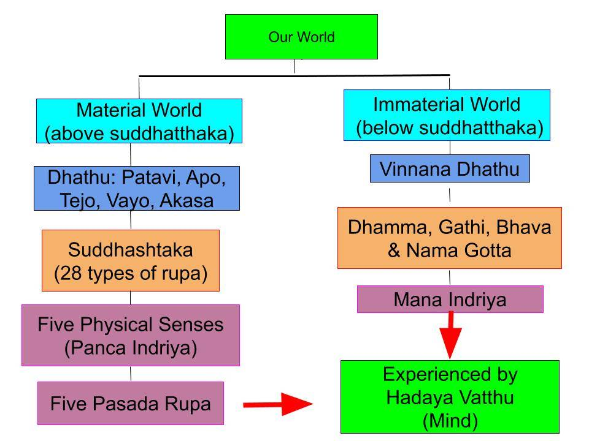

May 14, 2016; Revised September 30, 2019; October 26, 2019; January 11, 2020; April 6, 2021; September 10, 2022
Material World and Immaterial (Invisible) World
1. Our "human world" is made of two types of worlds:
- The material world (rupa loka) that we experience with the five physical senses. This is our familiar world with living beings and inert objects. This world has sights, sounds, smells, tastes, and body touches. For example, we experience sights via “cakkhuñca paṭicca rūpe ca uppajjāti cakkhuviññāṇaṃ,” where cakkhu viññāṇa is "seeing." The other four sensory faculties have similar expressions; see "Contact Between Āyatana Leads to Vipāka Viññāna."
- We can also recall our memories from the past and any future hopes/expectations. Those are in the "immaterial world" we experience with our minds. It is also called the "nāma lōka" or "viññāna dhātu."
- Here we use the phrase "immaterial world" ("nāma lōka") to describe those dhammās that can only be experienced with the mind VIA, "manañca paṭicca dhamme ca uppajjāti manoviññāṇaṃ.” Those dhammās include concepts, memories, etc., and kamma bīja with energy; see below.
- Note that there are six types of dhātu. Five dhātus (pathavi, āpo, tejo, vāyo, ākāsa) are associated with the rupa loka. The sixth, viññāna dhātu, is associated with the nāma lōka.
2. Those two worlds co-exist. We experience the immaterial (invisible) world or the nāma lōka with the mind.
- There are many things that we cannot "see" but we know to exist. For example, we know that radio and television signals surround us, but we cannot "see" them. We need special equipment like radios or TVs to detect those signals.
- Those dhammās in the immaterial world are just like that. An organ (mana indriya) in the brain detects those dhammās. Scientists are not aware of that yet. They think memories, for example, are stored in the brain. They are not.
- Those memories are in that immaterial world that co-exists with the material world. Just like a radio can detect those invisible radio waves, mana indriya detects those "unseen" memories (and kamma bija that bring kamma vipāka.)
- You may ask: how can the mana indriya sort out all those different memories and uncountable kamma bija from our past lives? Did you realize there are numerous radio and TV signals in a major city? Just like a radio or a TV can sort out and detect those signals, mana indriya can detect various types of dhammā.
What Are Dhammā?
3. Dhammās are what we perceive with the mind with the help of the mana indriya in the brain. Dhammā includes our memories and kamma bija (kamma bhava) that can bring vipaka.
- Only those with iddhi (super-normal) powers can recall memories from past lives. However, some children can remember past lives; see "Evidence for Rebirth."
- But dhammā (plural) also includes numerous kamma bija due to our past kamma (not only from the present life but from past lives.) They are not mere memories but have energies.
- Those dhammās with energy (i.e., kamma bija) are CREATED by our minds. Specifically, they are created in javana citta. For deep analysis, see "The Origin of Matter – suddhāṭṭhaka."
- Einstein's famous equation relates tangible matter and energy: E = m X c^2, where E is energy, c is the speed of light, and m is mass (amount of matter.)
- Just like plant seeds can germinate and become trees, our kamma bija (kamma seeds; bija means "seeds") can germinate in our minds and bring kamma vipāka.
Rūpa Can be Dense or Fine (Subtle)
4. Rūpa in Buddha Dhamma cannot be translated into English as "matter" or "solid objects." As we discussed above, our kammic energies are "stored" in the immaterial world (viññāna dhātu) as very fine rūpa called dhammā.
- Of course, the word "dhamma" (without the long "a") refers to a theory or teaching, like in Buddha Dhamma. Only when used in the plural, dhammā refer to those fine rūpā detected with the mind (with the help of mana indriya.)
- Therefore, such very fine rūpā are called "dhammā" They are "anidassanan, appaṭighan," meaning they cannot be seen or detected by our five physical senses; see, "What are Dhamma? – A Deeper Analysis." They include "kammic energies" that can bring vipāka at any time.
- They bring vipāka when the corresponding dhammā contact the mana indriya and get passed down to hadaya vatthu. Since viññāna dhātu pervades the universe, dhammā (or kamma bija) can bring vipāka anywhere in the universe.
5. The five physical senses detect "dense" rūpā in the material world. Such dense rūpā are ABOVE the smallest "unit of matter" in Buddha Dhamma, called suddhāṭṭhaka. (A suddhāṭṭhaka is a billion times smaller than an atom in present-day science). The 28 types of rūpa consist of these "dense types of rūpa"; see "Rūpa (Material Form)."
- The fine rūpas usually are not called rūpa but dhammā to make the distinction. Dhammā are very fine rūpa which are at or below the suddhāṭṭhaka stage. They are the rūpa are grasped only by the mana indriya or dhammayatana: "anidassanan, appaṭighan, dhammayatana pariyapanna rūpan." For a more in-depth analysis, see "What are Rūpa? – Dhammā are Rūpa too!."
All Thirty-One Realms Share the Immaterial World
6. The immaterial world is like a fine fabric that connects all living beings. We cannot experience the immaterial world with the five physical senses (that we use to experience the material world.) All 31 realms share the immaterial world.
- In the four realms of the Arūpa lōka, "dense matter" formed by suddhāṭṭhaka is absent (except for the hadaya vatthu of the arūpa Brahmā). Beings in the arūpa lōka (arupāvacara Brahmās) experience only dhammā. They do not have any five physical senses and only have the mind (hadaya vatthu).

Click to open in pdf format: Two Types of Loka
- Thus the "material world" is accessible only to living beings in the kāma lōka and rūpa lōka.
- Arūpa lōka means there are no "condensed rūpa" (like those in kāma lōka and rūpa lōka), but of course, dhammā are there (those arūpa beings can think and recall past events just like us).
- Furthermore, even in the rūpa lōka, only fine and subtle matter exists. There are no "solid objects" like trees. If we visit a rūpa lōka, we may not see anything with our eyes.
The World in Terms of Dhātu
7. Let us briefly discuss the main points depicted in the above chart. Everything in this world is made of 6 dhātu: pathavi, apo, tejo, vayo, akāsa, and viññāna. Five of them constitute the "material world," and the viññāna dhātu represents the "immaterial world."
- The basic building block for the material world is suddhāṭṭhaka. Not long ago, scientists thought that atoms were the building blocks, but now they say that even those elementary particles have structure. A suddhāṭṭhaka is much finer than any elementary particle.
- In the immaterial world (or the mental plane), there are the mental precursors to suddhāṭṭhaka. They are dhammā, gati, and bhava. Based on our gati, we make suddhāṭṭhaka in our javana citta; see "The Origin of Matter – suddhāṭṭhaka."
Five Physical Senses Detect Dense Rūpa and Mana Indriya Detects Dhammā
8. We have five sense faculties to experience the material world: eyes, ears, tongue, nose, and body. They pass down the sensory inputs to the five pasada rūpa located in the gandhabba or the manōmaya kāya, which overlaps our physical body); see "Gandhabba (Manomaya Kaya)." By the way, gandhabba is not a Mahāyāna concept: “Gandhabba State – Evidence from Tipiṭaka. “
- On the mental side, we have a mana indriya in the brain to sense the immaterial world; see "Brain – Interface between Mind and Body."
- Based on those five physical sense contacts with the material world and the contacts of the mana indriya with the immaterial world, our thoughts arise in the hadaya vatthu (also located in the gandhabba or the manōmaya kāya); see, "Does any Object (rūpa) Last only 17 Thought Moments?".
- That is a very brief description of the chart above. One could gain more information by clicking the links and using the "Search" button. Don't worry too much if all this does not make complete sense.
9. Thus, it is important to understand that there are two types of rūpa in our human world:
- Tangible matter in the material world that we experience with the help of the five physical senses.
- Then there are unseen (anidassana) and intangible (appaṭigha) rūpa, such as thoughts, perceptions, plans, and memories. They are dhammā, mano rūpa, gati, bhava, nāma gotta. It is the mana indriya in the brain that helps detect subtle rūpā.
- Both types of rūpa are eventually detected and experienced by the mind (hadaya vatthu). The hadaya vatthu is not located in the brain but in the body of the gandhabba and overlaps the physical heart region of the body; see "Gandhabba (Manomaya Kaya)."
- Comprehending this "wider picture" may need a little bit of effort. The world is complex, and much of the complexity is associated with the mind. The seat of the mind is not in the brain but in the fine body (manōmaya kāya) of the gandhabba.
The Dream World
10. Another part of our immaterial world is the dream world.
- When we dream, we "see" people and material objects. But we cannot say where those are located. They do not have a physical location; they are in the immaterial plane. And we do not "see" those dreams with our eyes, but with the mana indriya.
- When we sleep, our five physical senses do not function. But the mana indriya in the brain does. Scientists do confirm that parts of our brains are active during sleep.
- What is experienced in Arūpa lōka is somewhat similar to seeing dreams. Of course, one can contemplate in the arūpa lōka. However, one is unable to read or listen. Therefore, one cannot learn Tilakkhana (anicca, dukkha, anatta) from a Noble Person. Thus, one is unable to attain the Sotāpanna stage of Nibbāna in the arūpa lōka. But if one had attained the Sotāpanna stage before being born there, one can meditate and attain higher stages of Nibbāna.
Dense Rūpa for "Rough" Sensory Contacts
11. There is another way to look at our sense experiences. Living beings are attached to this world because they expect to gain pleasure from this world. Such pleasures are obtained by making contact with rūpa. Such rūpā come at various densities.
- Bodily pleasures are achieved by the strongest contact (touch). Then taste, smell, vision, and sounds, becoming less dense in that order.
- The softest contact is via dhamma. This is our immaterial world; we think, plan for the future, remember things from the past, etc.: We do this all the time, and we can do it anywhere. Another way to say this is to say that we engage in mano, vaci, and kāya saṅkhāra.
- Thus, contacts by the mana indriya with dhammā in the mano lōka constitute a significant portion of sense experience. That involves mano rūpa (dhamma, gati, bhava, nāma gotta) in the mind plane or the immaterial world.
12. The way a living being experiences and enjoys (or suffers) sense contacts is different in the three main categories of existence: kāma lōka, rūpa lōka, and arūpa lōka.
- Most "rough" or "ōlārika" sense contacts are available only in the kāma lōka. Even here, they are roughest in the niraya (the lowest realm) and generally reduce in "roughness" as moving up to the human realm, the fifth. The six deva realms are significantly "softer" than the human realm; deva bodies are much finer (like gandhabba), and an average human cannot see them.
- The roughest sense contacts (touch, taste, and smell) are absent in the rūpa lōka. Only visual and sound contacts are available for the Brahmā in the 16 rūpa lōka realms, in addition to the mind.
- Those arupi Brahmā in the four arūpa lōka realms has only the mind, with which they experience only the finest rūpa (dhamma) that are below the suddhāṭṭhaka stage.
- Those Brahmā in both rupi and arupi lōka have seen the perils of "kāma assāda" that are available in the kāma lōka. They had enjoyed jhānic pleasures as humans and valued those more than the "rough" sensory pleasures. They have given up the craving for those "rough" sense pleasures that are available via touch, taste, and smell.
Stronger Cravings Match "Denser Sensory Contacts"
13. We can get an idea of such "soft" and "rough" sense contacts with the following example. Suppose someone (a grandmother is a good example) watches her grandchild laughing, dancing, and having a good time.
- At first, she may be watching from a distance and enjoying the sight of the baby having fun.
- Then she goes and hugs the child. It is not enough to watch from a distance; she must touch the child.
- If the child keeps wiggling and having a good time, the grandmother may start kissing the child. In some cases, the grandmother may start tightening the hold on the child, even without realizing it and may make the child cry out in pain.
- This last scenario exemplifies how craving extreme sensory pleasure can lead to suffering. Of course, the craving for ōlārika sense pleasures leads to most suffering.
- But suffering is there even in the rupi and arupi realms. Even at the level of arupi Brahmā -- where the attachment is only to pleasures of the softest of the rūpa (dhamma) --, there is inevitable suffering at the end when they have to give up that existence and come back down to the human realm.
Less Suffering in "Less-Dense" Realms
14. Therefore, the level of inevitable suffering goes hand in hand with the "denseness" of the sensory contact.
- Pains, aches, and illnesses are there only in the lowest five realms (including the human realm), where there are dense physical bodies. In the higher realms, those are absent. This is the price even humans pay for being able to experience "rough contact pleasures" such as a body massage, sex, eating, and smelling.
- We humans in the kāma lōka enjoy close and "rough" sense pleasures. In addition, most times, just enjoying sense pleasures is not enough; we like to "own" those things that provide sense pleasures. For example, people like to "own" vacation homes; renting a house in that location is not enough for a visit.
- This tendency to "own" pleasurable things also goes down in higher realms. There are fewer material things to "own" in Brahma lōkas, especially in the arupi Brahma realms.
Connection to Magga Phala
15. As one attains higher stages of Nibbāna, craving for "rough" sensory pleasures and wanting to "own" things go down.
- A Sotāpanna has only "seen" the perils of kāma assāda; he/she still enjoys them. Thus, he/she will still be born in the kāma lōka realms but not in the apāyā.
- A Sakadāgāmi may still enjoy "kāma assāda" but has no desire to "own" those things that provide pleasures. It is enough to live in a lovely rented house, and there is no desire to own a lovely house. A Sakadāgāmi can see the burden of "owning things." A Sakadāgāmi will be born only in realms above the human realm.
- An Anāgāmi has no particular interest in enjoying kāma assāda. He/she eats to quench the hunger (but will eat delicious foods when offered.) An Anāgāmi will never prioritize sensory pleasure over the "pleasure of Dhamma" (of course, Dhamma here means Buddha Dhamma). He/she will be born in the rūpa realms reserved for the Anāgāmis upon death and will not be reborn in kāma lōka.
- An Arahant has no desire for even jhānic pleasures and will not be born anywhere in the 31 realms upon death.
16. Each habitable planetary system (cakkavāla) has all 31 realms of existence, even though we can only see two realms (human and animal) in ours.
This is discussed next: "31 Realms Associated with the Earth", .........
14 de maio de 2016; Revisado em 30 de setembro de 2019; 26 de outubro de 2019; 11 de janeiro de 2020; 6 de abril de 2021; 10 de setembro de 2022
Mundo Material e Mundo Imaterial (Invisível)
1. Nosso “mundo humano” é composto por dois tipos de mundos:
- O mundo material (Rūpa Loka) que experimentamos com os cinco sentidos físicos. Este é o nosso mundo familiar, com seres vivos e objetos inertes. Este mundo tem imagens, sons, cheiros, sabores e sensações táteis. Por exemplo, experimentamos imagens visuais por meio de “Cakkhu Paṭicca rūpe ca uppajjāti Cakkhu Viññāṇa”, onde Cakkhu Viññāṇa significa “ver”. As outras quatro faculdades sensoriais têm expressões semelhantes; veja “O contato entre Āyatana leva a Vipāka Viññāna”.
- Também podemos relembrar nossas memórias do passado e quaisquer esperanças/expectativas futuras. Essas estão no “mundo imaterial” que experimentamos com nossas mentes. Ele também é chamado de “Nāma lōka” ou “viññāna Dhātu”.
- Aqui usamos a expressão “mundo imaterial” (“Nāma lōka”) para descrever aqueles Dhammās que só podem ser experimentados com a mente VIA, “manañca Paṭicca dhamme ca uppajjāti manoviññāṇaṃ”. Esses Dhammās incluem conceitos, memórias, etc., e Kamma Bīja com energia; veja abaixo.
- Observe que existem seis tipos de Dhātu. Cinco Dhātus (pathavi, Āpo, Tejo, Vāyo, Ākāsa) estão associados ao Rūpa Loka. O sexto, viññāna Dhātu, está associado ao Nāma Loka.
2. Esses dois mundos coexistem. Experimentamos o mundo imaterial (invisível) ou o Nāma lōka com a mente.
- Há muitas coisas que não podemos “ver”, mas sabemos que existem. Por exemplo, sabemos que sinais de rádio e televisão nos cercam, mas não podemos “vê-los”. Precisamos de equipamentos especiais, como rádios ou TVs, para detectar esses sinais.
- Esses Dhammās no mundo imaterial são exatamente assim. Um órgão (Mana Indriya) no cérebro detecta esses Dhammās. Os cientistas ainda não estão cientes disso. Eles pensam que as memórias, por exemplo, são armazenadas no cérebro. Mas não são.
- Essas memórias estão naquele mundo imaterial que coexiste com o mundo material. Assim como um rádio pode detectar essas ondas de rádio invisíveis, o Mana Indriya detecta essas memórias “invisíveis” (e kamma bija que trazem Kamma Vipāka).
- Você pode perguntar: como o Mana Indriya consegue separar todas essas diferentes memórias e os incontáveis kamma bija de nossas vidas passadas? Você já percebeu que há inúmeros sinais de rádio e TV em uma grande cidade? Assim como um rádio ou uma TV consegue separar e detectar esses sinais, o Mana Indriya consegue detectar vários tipos de Dhammā.
O que são Dhammā?
3. Dhammās são o que percebemos com a mente com a ajuda do Mana Indriya no cérebro. Dhammā inclui nossas memórias e kamma bija (Kamma Bhava) que podem trazer vipaka.
- Somente aqueles com poderes Iddhi (sobrenaturais) podem relembrar memórias de vidas passadas. No entanto, algumas crianças conseguem se lembrar de vidas passadas; veja “Evidências do Renascimento”.
- Mas Dhammā (plural) também inclui inúmeros kamma bija devido ao nosso Kamma passado (não apenas da vida presente, mas de vidas passadas). Eles não são meras memórias, mas possuem energias.
- Esses Dhammās com energia (ou seja, Kamma Bija) são CRIADOS por nossas mentes. Especificamente, eles são criados no Javana Citta. Para uma análise aprofundada, consulte “A Origem da Matéria – Suddhāṭṭhaka”.
- A famosa equação de Einstein relaciona matéria tangível e energia: E = m X c^2, onde E é energia, c é a velocidade da luz e m é massa (quantidade de matéria).
- Assim como as sementes das plantas podem germinar e se tornar árvores, nosso kamma bija (sementes de kamma; bija significa “sementes”) pode germinar em nossas mentes e trazer Kamma Vipāka.
Rūpa pode ser densa ou fina (sutil)
4. Rūpa no Buddha Dhamma não pode ser traduzido para o português como “matéria” ou “objetos sólidos”. Como discutimos acima, nossas energias Kamma são “armazenadas” no mundo imaterial (viññāna Dhātu) como uma Rūpa muito sutil chamada Dhammā.
- É claro que a palavra “Dhamma” (sem o “a” longo) se refere a uma teoria ou ensinamento, como no Buddha Dhamma. Somente quando usada no plural, Dhammā se refere àquelas rūpā finas detectadas pela mente (com a ajuda de Mana Indriya).
- Portanto, tais rūpā muito sutis são chamadas de “Dhammā”. Elas são “anidassanan, appaṭighan”, o que significa que não podem ser vistas ou detectadas por nossos cinco sentidos físicos; veja “O que são Dhamma? – Uma Análise Mais Profunda”. Elas incluem “energias de Kamma” que podem trazer Vipāka a qualquer momento.
- Elas trazem Vipāka quando os Dhammā correspondentes entram em contato com o Mana Indriya e são transmitidos para o Hadaya Vatthu. Como o viññāna Dhātu permeia o universo, os Dhammā (ou kamma bija) podem trazer Vipāka em qualquer lugar do universo.
5. Os cinco sentidos físicos detectam rūpā “densos” no mundo material. Tais rūpā densos estão ACIMA da menor “unidade de matéria” no Buddha Dhamma, chamada Suddhāṭṭhaka. (Um Suddhāṭṭhaka é um bilhão de vezes menor do que um átomo na ciência atual). Os 28 tipos de Rūpa consistem nesses “tipos densos de Rūpa”; consulte “Rūpa (Forma Material)”.
- Os rūpas finos geralmente não são chamados de Rūpa, mas de Dhammā, para fazer a distinção. Dhammā são rūpas muito finos que estão no estágio Suddhāṭṭhaka ou abaixo dele. São os rūpa captados apenas pelo Mana Indriya ou dhammayatana: “anidassanan, appaṭighan, dhammayatana pariyapanna rūpan”. Para uma análise mais aprofundada, consulte “O que são Rūpa? – Dhammā também são Rūpa!”.
Todos os Trinta e Um Reinos Compartilham o Mundo Imaterial
6. O mundo imaterial é como um tecido fino que conecta todos os seres vivos. Não podemos experimentar o mundo imaterial com os cinco sentidos físicos (que usamos para experimentar o mundo material). Todos os 31 reinos compartilham o mundo imaterial.
- Nos quatro reinos do Arūpa lōka, a “matéria densa” formada por Suddhāṭṭhaka está ausente (exceto pelo Hadaya Vatthu do Brahmā Arūpa). Os seres no arūpa lōka (arupāvacara Brahmās) experimentam apenas Dhammā. Eles não possuem os cinco sentidos físicos e têm apenas a mente (Hadaya Vatthu).
Clique para abrir em formato PDF: Dois Tipos de Loka
- Assim, o “mundo material” é acessível apenas aos seres vivos no Kāma lōka e no Rūpa lōka.
- Arūpa lōka significa que não há “rūpa condensada” (como as do Kāma lōka e do rūpa lōka), mas, é claro, os Dhammā estão lá (esses seres arūpa podem pensar e relembrar eventos passados, assim como nós).
- Além disso, mesmo no Rūpa lōka, existe apenas matéria fina e sutil. Não há “objetos sólidos” como árvores. Se visitarmos um Rūpa lōka, talvez não vejamos nada com nossos olhos.
O Mundo em Termos de Dhātu
7. Vamos discutir brevemente os pontos principais descritos no gráfico acima. Tudo neste mundo é feito de 6 Dhātu: pathavi, apo, Tejo Dhātu, vayo, akāsa e viññāna. Cinco deles constituem o “mundo material”, e o Dhātu viññāna representa o “mundo imaterial”.
- O bloco de construção básico do mundo material é o Suddhāṭṭhaka. Não faz muito tempo, os cientistas pensavam que os átomos eram os blocos de construção, mas agora dizem que mesmo essas partículas elementares têm estrutura. Um Suddhāṭṭhaka é muito mais fino do que qualquer partícula elementar.
- No mundo imaterial (ou plano mental), existem os precursores mentais do Suddhāṭṭhaka. São eles: Dhammā, gati e Bhava. Com base em minha Gati, criamos Suddhāṭṭhaka em meu Citta Javana; veja “A Origem da Matéria – Suddhāṭṭhaka”.
Os cinco sentidos físicos detectam o Rūpa denso e o Mana Indriya detecta o Dhammā
8. Temos cinco faculdades sensoriais para experimentar o mundo material: olhos, ouvidos, língua, nariz e corpo. Elas transmitem os estímulos sensoriais para os cinco pasada Rūpa localizados no Gandhabba ou no manōmaya Kāya, que se sobrepõe ao nosso corpo físico); veja “Gandhabba (Manomaya Kāya)”. A propósito, Gandhabba não é um conceito Mahāyāna: “Estado de Gandhabba – Evidências do Tipiṭaka.”
- No lado mental, temos um Mana Indriya no cérebro para perceber o mundo imaterial; veja “Cérebro – Interface entre Mente e Corpo”.
- Com base nesses cinco contatos sensoriais físicos com o mundo material e nos contatos do Mana Indriya com o mundo imaterial, nossos pensamentos surgem no Hadaya Vatthu (também localizado no Gandhabba ou no manōmaya Kāya); veja “Algum objeto (Rūpa) dura apenas 17 momentos de pensamento?”.
- Essa é uma descrição muito breve do gráfico acima. É possível obter mais informações clicando nos links e usando o botão “Pesquisar”. Não se preocupe muito se tudo isso não fizer sentido completo.
9. Assim, é importante compreender que existem dois tipos de Rūpa em nosso mundo humano:
- Matéria tangível no mundo material que experimentamos com a ajuda dos cinco sentidos físicos.
- Depois, há a Rūpa invisível (anidassana) e intangível (appaṭigha), como pensamentos, percepções, planos e memórias. São Dhammā, mano rūpa, Gati, Bhava, Nāma gotta. É o Mana Indriya no cérebro que ajuda a detectar a Rūpa sutil.
- Ambos os tipos de Rūpa são, eventualmente, detectados e experimentados pela mente (Hadaya Vatthu). O Hadaya Vatthu não está localizado no cérebro, mas no corpo do Gandhabba e se sobrepõe à região física do coração do corpo; veja “Gandhabba (Manomaya Kaya)”.
- Compreender esse “quadro mais amplo” pode exigir um pouco de esforço. O mundo é complexo, e grande parte dessa complexidade está associada à mente. A sede da mente não está no cérebro, mas no corpo sutil (manōmaya Kāya) do Gandhabba.
O Mundo dos Sonhos
10. Outra parte do nosso mundo imaterial é o mundo dos sonhos.
- Quando sonhamos, “vemos” pessoas e objetos materiais. Mas não podemos dizer onde eles estão localizados. Eles não têm uma localização física; estão no plano imaterial. E não “vemos” esses sonhos com nossos olhos, mas com o Mana Indriya.
- Quando dormimos, nossos cinco sentidos físicos não funcionam. Mas o Mana Indriya no cérebro funciona. Os cientistas confirmam que partes de nossos cérebros estão ativas durante o sono.
- O que se experimenta no Arūpa lōka é de certa forma semelhante a ver sonhos. É claro que se pode contemplar no Arūpa lōka. No entanto, não se consegue ler nem ouvir. Portanto, não é possível aprender Tilakkhaṇa (Anicca, Dukkha, Anattā) com uma Pessoa Nobre. Assim, não é possível atingir o estágio de Sotāpanna do Nibbāna no Arūpa lōka. Mas se alguém tivesse atingido o estágio de Sotāpanna antes de nascer ali, poderia meditar e atingir estágios superiores do Nibbāna.
Rūpa Densa para Contatos Sensoriais “Rugosos”
11. Há outra maneira de encarar nossas experiências sensoriais. Os seres vivos estão apegados a este mundo porque esperam obter prazer dele. Tais prazeres são obtidos por meio do contato com Rūpa. Essas Rūpas apresentam-se em várias densidades.
- Os prazeres corporais são alcançados pelo contato mais forte (o toque). Em seguida, vêm o paladar, o olfato, a visão e os sons, tornando-se menos densos nessa ordem.
- O contato mais suave é por meio do Dhamma. Este é o nosso mundo imaterial; pensamos, planejamos o futuro, lembramos coisas do passado, etc.: fazemos isso o tempo todo e podemos fazê-lo em qualquer lugar. Outra maneira de dizer isso é afirmar que nos envolvemos em Mano, Vacíu e Kāya Saṅkhāra.
- Assim, os contatos do Mana Indriya com Dhammā no mano lōka constituem uma parte significativa da experiência sensorial. Isso envolve mano rūpa (Dhammā, Gati, Bhava, Nāma Gotta) no plano mental ou no mundo imaterial.
12. A maneira como um ser vivo experimenta e desfruta (ou sofre) os contatos sensoriais é diferente nas três categorias principais de existência: Kāma lōka, Rūpa lōka e Arūpa lōka.
- A maioria dos contatos sensoriais “brutos” ou “ōlārika” está disponível apenas no Kāma lōka. Mesmo aqui, eles são mais brutos no Niraya (o reino mais baixo) e geralmente diminuem em “brutalidade” à medida que se sobe para o reino humano, o quinto. Os seis reinos Deva são significativamente “mais suaves” do que o reino humano; os corpos Deva são muito mais sutis (como os Gandhabba), e um humano comum não consegue vê-los.
- Os contatos sensoriais mais grosseiros (tato, paladar e olfato) estão ausentes no Rūpa lōka. Apenas contatos visuais e sonoros estão disponíveis para os Brahmā nos 16 reinos do Rūpa lōka, além da mente.
- Os Brahmā arupi nos quatro reinos arūpa lōka possuem apenas a mente, com a qual experimentam apenas os Rūpa (Dhamma) mais sutis que estão abaixo do estágio Suddhāṭṭhaka.
- Esses Brahmā, tanto no rupi quanto no arupi lōka, perceberam os perigos do “kāma assāda” disponíveis no kāma lōka. Eles desfrutaram dos prazeres Jhāna enquanto humanos e valorizaram esses prazeres mais do que os prazeres sensoriais “brutos”. Eles abandonaram o desejo por esses prazeres sensoriais “brutos” disponíveis por meio do tato, do paladar e do olfato.
Desejos mais intensos correspondem a “contatos sensoriais mais densos”
13. Podemos ter uma ideia desses contatos sensoriais “suaves” e “brutos” com o exemplo a seguir. Suponha que alguém (uma avó é um bom exemplo) observe seu neto rindo, dançando e se divertindo.
- A princípio, ela pode estar observando à distância e apreciando a visão do bebê se divertindo.
- Então ela se aproxima e abraça a criança. Não basta observar à distância; ela precisa tocar a criança.
- Se a criança continuar se contorcendo e se divertindo, a avó pode começar a beijá-la. Em alguns casos, a avó pode começar a apertar a criança com mais força, mesmo sem perceber, e pode fazer com que a criança grite de dor.
- Este último cenário exemplifica como o desejo por prazer sensorial extremo pode levar ao sofrimento. É claro que o desejo por prazeres sensoriais ōlārika leva ao maior sofrimento.
- Mas o sofrimento está presente mesmo nos reinos rupi e arupi. Mesmo no nível do Brahmā arupi — onde o apego é apenas aos prazeres do mais suave dos Rūpa (Dhamma) —, há sofrimento inevitável no final, quando eles têm que abandonar essa existência e voltar ao reino humano.
Menos sofrimento em reinos “menos densos”
14. Portanto, o nível de sofrimento inevitável anda lado a lado com a “densidade” do contato sensorial.
- Dores, incômodos e doenças existem apenas nos cinco reinos mais baixos (incluindo o reino humano), onde há corpos físicos densos. Nos reinos superiores, esses elementos estão ausentes. Esse é o preço que até mesmo os humanos pagam por poderem experimentar “prazeres de contato grosseiros”, como massagem corporal, sexo, comer e cheirar.
- Nós, humanos no Kāma lōka, desfrutamos de prazeres sensoriais íntimos e “tátil-sensoriais”. Além disso, na maioria das vezes, apenas desfrutar dos prazeres sensoriais não é suficiente; gostamos de “possuir” as coisas que proporcionam esses prazeres. Por exemplo, as pessoas gostam de “possuir” casas de férias; alugar uma casa naquele local não é suficiente para uma visita.
- Essa tendência de “possuir” coisas prazerosas também se estende aos reinos superiores. Há menos coisas materiais para “possuir” nos Brahmā lōkas, especialmente nos reinos arupi de Brahmā.
Conexão com Magga Phala
15. À medida que se alcança estágios mais elevados de Nibbāna, o desejo por prazeres sensoriais “brutos” e a vontade de “possuir” coisas diminuem.
- Um Sotāpanna apenas “percebeu” os perigos do kāma Assāda; ele/ela ainda desfruta deles. Assim, ele/ela ainda renascerá nos reinos kāma lōka, mas não nos apāyā.
- Um Sakadāgāmi ainda pode desfrutar de “Kāma Assāda”, mas não tem desejo de “possuir” as coisas que proporcionam prazeres. É suficiente viver em uma linda casa alugada, e não há desejo de possuir uma casa própria. Um Sakadāgāmi consegue ver o fardo de “possuir coisas”. Um Sakadāgāmi renascerá apenas em reinos acima do reino humano.
- Um Anāgāmi não tem interesse particular em desfrutar do Kāma Assāda. Ele/ela come para saciar a fome (mas comerá alimentos deliciosos quando oferecidos). Um Anāgāmi nunca priorizará o prazer sensorial em detrimento do “prazer do Dhamma” (é claro que Dhamma aqui significa o Buddha Dhamma). Ele/ela renascerá nos reinos Rūpa reservados aos Anāgāmis após a morte e não renascerá no Kāma lōka.
- Um Arahant não tem desejo nem mesmo pelos prazeres do Jhāna e não renascerá em nenhum dos 31 reinos após a morte.
16. Cada sistema planetário habitável (cakkavāla) possui todos os 31 reinos da existência, embora possamos ver apenas dois reinos (humano e animal) no nosso.
Isso é discutido a seguir: “31 Reinos Associados à Terra”, .........